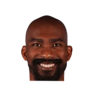
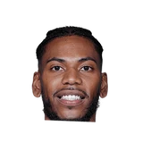
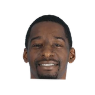

“When I ask him to do something, he's done everything I've asked him to do from a player standpoint. I think at times, Gilbert can be his own worst enemy as far as talking too much. And I really believe this: he looks at being Nick's mentor, he likes to see Nick do good. But for him to make those comments, they're just unjustified type comments.”

What Flip Saunders has said about other NBA players and coaches
19 quotes from Flip Saunders about 14 other people around the NBA, newest first. Each one links to its original source.
Best quotes
In a statement released by the team, Saunders said,
“Retaining Pek was our No. 1 priority this offseason and we're very excited that he's chosen to continue his career in Minnesota. Thanks to a lot of hard work and determination, Pek has developed into one of the NBA's premier centers and is entering the prime of his career. We envision Pek and Kevin Love being the `Bruise Brothers' and forming one of the best front courts in the NBA for a long time to come.”
Flip Saunders on the comments Gilbert Arenas made about faking an injury:
“One, that’s not totally true. I talked to Gilbert at shootaround, he said his knee was sore, and I told him at that point that he was not going to play. Whatever comments beyond that that Gilbert made, those are untrue comments. He might think that and I know he’s very close to Nick and that, but as I told him and the rest of our team, those guys don’t determine even if Gilbert doesn’t play, who does play. That’s what I do as far as determine. We’ve dealt with it internally, Gilbert is going to be fined for it, and we move on.”
What NBA players and coaches have said about Flip Saunders →
Quotes per season
Flip Saunders talks most about
 Flip Saunders on Gilbert Arenas6 quotes
Flip Saunders on Gilbert Arenas6 quotes Flip Saunders on Kevin Love3 quotes
Flip Saunders on Kevin Love3 quotes- Andrei Kirilenko1 quote

Corey Brewer1 quote Fred Hoiberg1 quote
Fred Hoiberg1 quote
Glenn Robinson III1 quote Jeff Van Gundy1 quote
Jeff Van Gundy1 quote, Public domain, via Wikimedia Commons") Joe Dumars1 quote
Joe Dumars1 quote John Wall1 quote
John Wall1 quote
Jordan Crawford1 quote Ricky Rubio1 quote
Ricky Rubio1 quote- Ted Leonsis1 quote
2014-15
5 quotesAndy Greder:Flip Saunders on Tyus Jones trade:
“(Cleveland) called back with about two minutes on the clock, and that's basically when we cut a deal.”
Jerry Zgoda:Flip Saunders:
“We really liked Glenn Robinson III. It was unfortunate for him that he never really had an opportunity and we didn’t see that changing.”
F.Saunders on #TheReturn video poking fun at K.Love:
“Didn't know about it, didn't approve it. As an organization we should be above that”
Andy Greder:#Twolves president Flip Saunders on Corey Brewer trade report:
“We are not going to make a snap decision to help us win four more games.”
“I believe that the No. 1 issue was, as the season progressed and maybe more so when I took over as coach, teams then believed we were not hesitant to bring Love back.”
2013-14
3 quotesAnd Saunders said he tried, starting out with his former ESPN colleague Jeff Van Gundy.
“The first guy that I went to and tried to get was Jeff Van Gundy. He was the first guy,”
“We talked to a lot of people, a lot of good people. Some college guys, [Michigan State’s] Tom Izzo is a friend of mine, [Iowa State’s] Freddie Hoiberg. When you go through that situation they have things they want to do. To coach at [the NBA] level is difficult because there’s a lot of factors that get involved. So when it came down to it and we started going through everybody, I went to Glen this week and I said, ‘Here’s some options we have.’ Then Glen said, based on where our team is right now, I think you’re the best viable option to coach this team and move forward.”
In a statement released by the team, Saunders said,
“Retaining Pek was our No. 1 priority this offseason and we're very excited that he's chosen to continue his career in Minnesota. Thanks to a lot of hard work and determination, Pek has developed into one of the NBA's premier centers and is entering the prime of his career. We envision Pek and Kevin Love being the `Bruise Brothers' and forming one of the best front courts in the NBA for a long time to come.”
2012-13
2 quotes“We feel he's a valuable part of where we're going, and we'll do what we have to do to try to bring him back. I think Kirilenko's the same way. Until he exercises his option, we feel he's a guy that's going to come back.”
“I was a proponent from day one of changing that whole atmosphere. Having been in situations where we had success in both Detroit and in Minnesota, we didn’t have that… When I was there, I made my feelings pretty well known. And actually when I left — and had meetings with Ted Leonsis when I left — I pretty much said the same thing: that the team is not gonna take any type of steps until you clean out some of that knucklehead — like you said — the knucklehead factor and get everyone more on the same page.”
2010-11
9 quotes“I think Rubio is going to be a better NBA player than a European player because it's a much more open style of play, which is kind of his forte,”
From coach Flip Saunders‘ perspective, it’s a pretty bright picture.
“This has been a great opportunity for Jordan and for both of those guys, especially playing together these last 20 games,”
“Joe Dumars has done a great job, as far as building that organization. I know a lot of people have talked about what the players did, and it was against the coach. But that's too disrespectful to Joe, for what he's done. He brought a lot of those guys in there, paid a lot of those guys. That's his organization.”
Flip Saunders on the comments Gilbert Arenas made about faking an injury:
“One, that’s not totally true. I talked to Gilbert at shootaround, he said his knee was sore, and I told him at that point that he was not going to play. Whatever comments beyond that that Gilbert made, those are untrue comments. He might think that and I know he’s very close to Nick and that, but as I told him and the rest of our team, those guys don’t determine even if Gilbert doesn’t play, who does play. That’s what I do as far as determine. We’ve dealt with it internally, Gilbert is going to be fined for it, and we move on.”
“All I can do is this, as I said to the team today... I don't question players as far as how they are from their health situation.... Forsomebody sitting out there, do they maybe get frustrated [by Arenas]? I'm sure people get frustrated hearing that. But from my standpoint, as I told our team, I trust all 14, 15 guys that are in that locker room. And so if someone says they're hurt, we move on and put someone else in there. As a player, as a professional athlete, you've got to put yourself in a position to understand that when you step away, whether it's an injury or whatever it is, you put yourself in a situation that someone else can take your spot. And so like I said, so we move on.”
“Believe it or not, Gilbert has been - in my two years here - the easiest guy that I've had to coach,”
Saunders told Kevin Sheehan and Thom Loverro.
“So that was more a surprise to me than anybody. My reaction was that was not what was told to me, that's why it was a situation that was handled very quickly, not only in front of Gilbert but in front of the whole team. Actions were taken, and then what you do at that point, we have to move on.”
“When I ask him to do something, he's done everything I've asked him to do from a player standpoint. I think at times, Gilbert can be his own worst enemy as far as talking too much. And I really believe this: he looks at being Nick's mentor, he likes to see Nick do good. But for him to make those comments, they're just unjustified type comments.”
Saunders on whether Arenas and John Wall will work well together:
“You look at some of the better teams that have played. You look at Detroit, with Joe Dumars and Isiah Thomas. Both of those guys were considered point guards, or guys that wanted to have the ball in their hands. Both these guys - they've played a lot together over the last few weeks. There won't be any problems there.”